← 创作手记2026-11-02 · 画面里的问题与取舍
截至北京时间11:32的阶段记录：实际输出36张，其中14张采用为定稿、22张保留为研究。此后创作不纳入这一时间截面。筛孔、坐椅、地铁、转身、墙面音乐与白色场地探索未定稿；没有因为构图好看就豁免身份或材料问题。
梯子停在黑处
梯子伸进大片黑色，顶端并没有碰到月亮。奶蛙小小地站在地面上，正面朝着我们；空出来的距离，比攀登的动作更醒目。
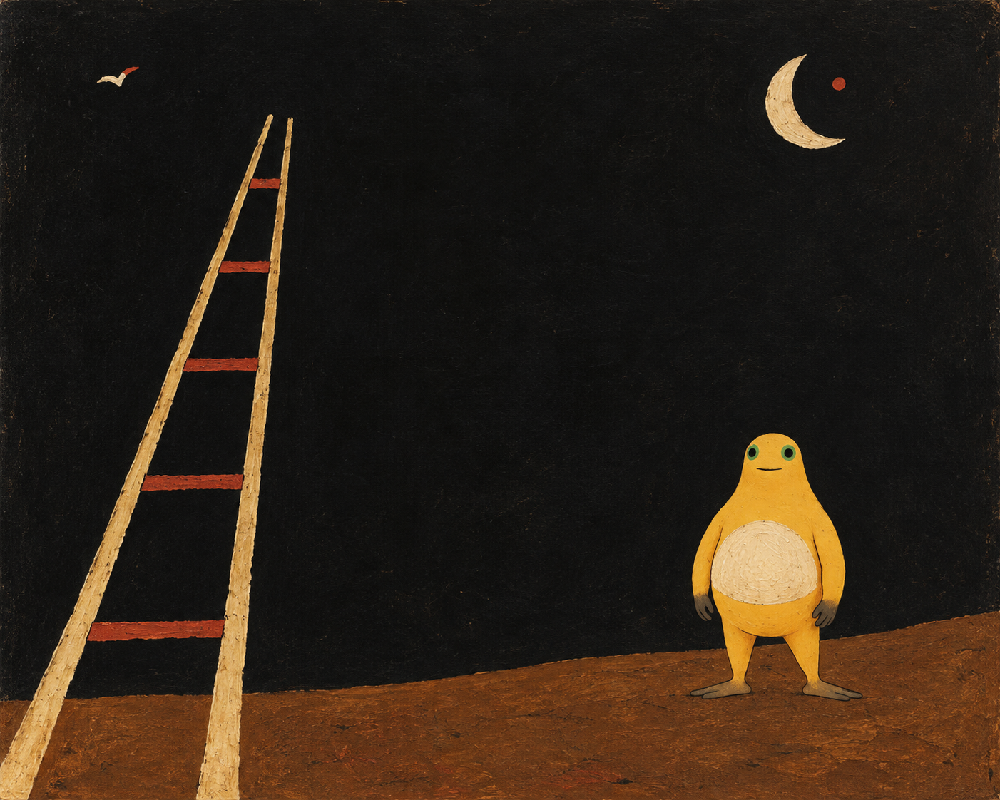
梯子停在黑处 · V1 · 采用的定稿版本；具体来源与权利另列。这次的问题：以黑色空场和梯子、月亮的间隔形成张力。
梯子止于黑处，月亮偏在另一侧，小角色静立。
保留三者之间的远隔；不把正面的静立说成向月吠叫。
下一问题（尚未实施）：下一步可改变梯子高度，检验空场压力如何变化。
短棒举起来，杯子还站着
短棒举在半空，杯子、硬币和刀还稳稳留在鱼形桌上。大帽子和繁密的植物把场面推向仪式，奶蛙的神情却很平静。奇事似乎将要发生，也可能只是一直等着。
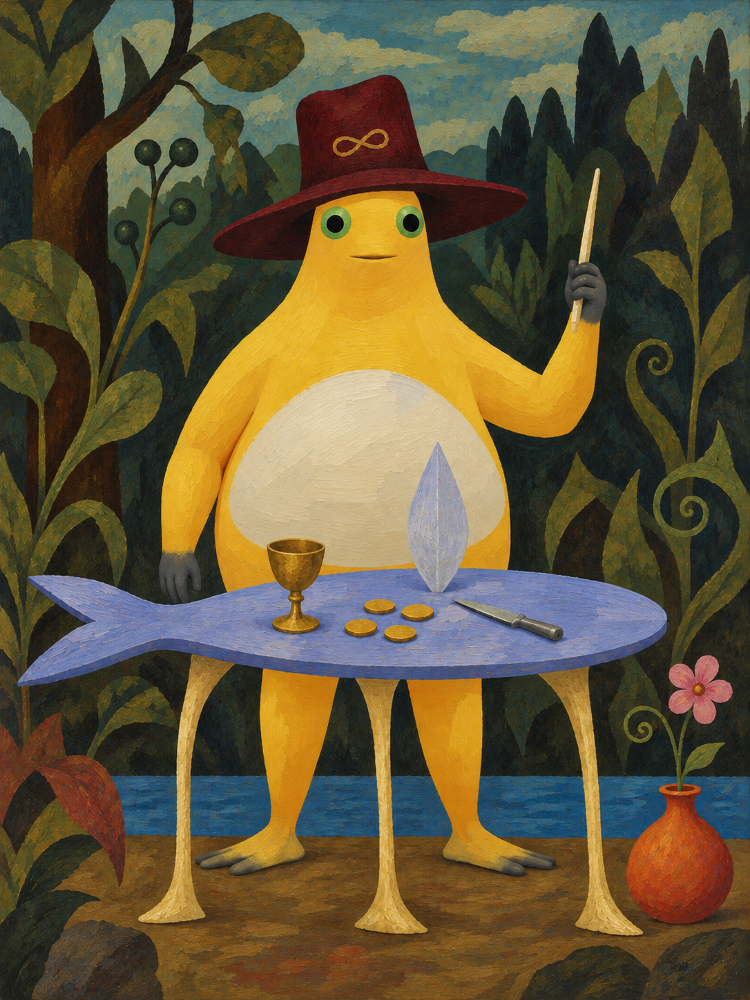
短棒举起来，杯子还站着 · V2 · 采用的定稿版本；具体来源与权利另列。这次的问题：把象征物与桌子腿、角色腿分开，同时统一绘画色面。
鱼形桌上物件可辨，桌腿与角色双腿没有混成同一组。
V2强化宽色面，保存持棒、帽子和桌面物的关系。
下一问题（尚未实施）：下一步可删去更多背景植物，检验仪式感是否仍在。
亮处没有走廊
亮门外直接就是海，暗门后才看得到家具。奶蛙站在两种空间之间，还没迈步。墙上那片斜着铺开的阳光，既像邀请，也让门槛显得更突然。
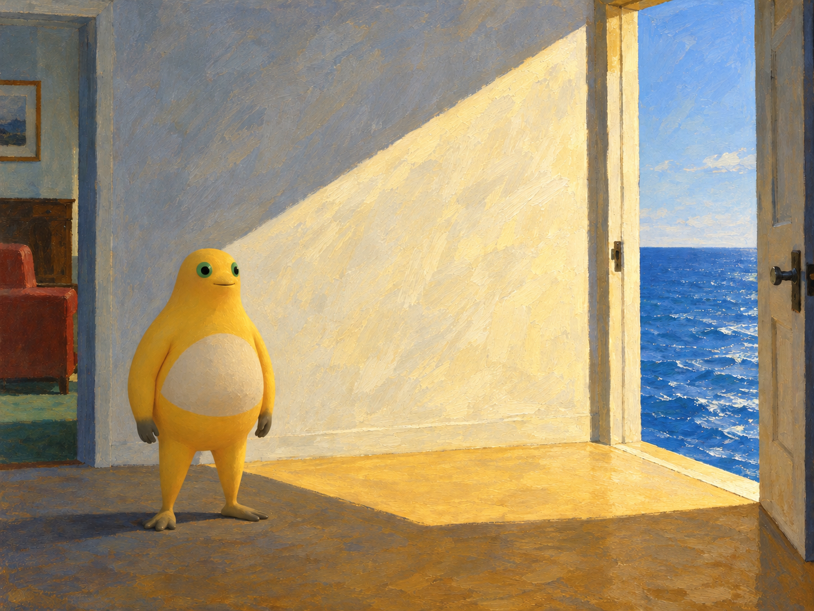
亮处没有走廊 · V2 · 采用的定稿版本；具体来源与权利另列。这次的问题：让亮门通向海、暗门通向室内，形成不同的空间邀请。
海面紧接亮门，左侧暗处有家具，角色停在两者之间。
V2用较宽笔触统一画面，保留两扇门的差异；加入角色改变了原作空室经验。
下一问题（尚未实施）：下一步可测试角色位置偏移会如何改变两扇门的吸引力。
桌子伸到面前
粉红桌面一路伸到眼前，近处的背影把我们也挤进席间。盘子和点心拉开远近，最远的奶蛙反而正面看着我们。这顿饭的安静，来自彼此之间留出的距离。
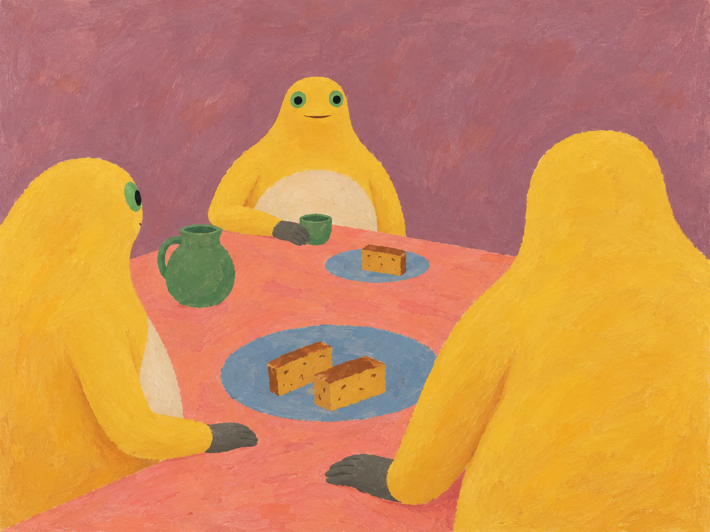
桌子伸到面前 · V1 · 采用的定稿版本；具体来源与权利另列。这次的问题：用桌面和前景背影拉开远近，不依赖强烈体积。
前景背影更大，远处正面角色更小，盘子随桌面退远。
单张已建立观看位置；原作五个人物改为三只奶蛙，桌面更居中。
下一问题（尚未实施）：下一步可检验偏置桌边是否能增加席间的疏离感。
手里的一片
巨大的向日葵横在走廊里，花瓣散到红地毯上。奶蛙手里只留了一小片，远处门缝仍透着细光。比起整个房间的异样，手里这点轻薄的东西显得格外具体。
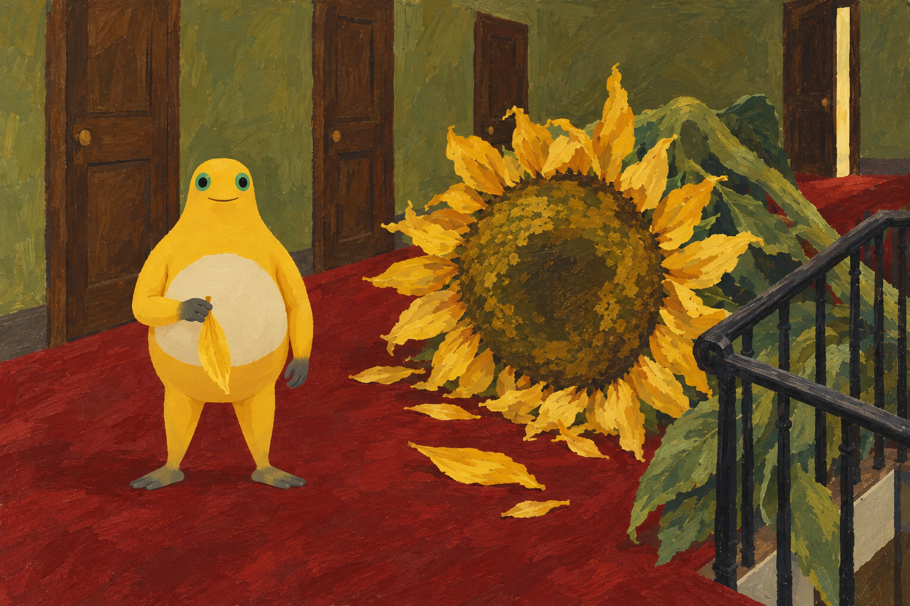
手里的一片 · V2 · 采用的定稿版本；具体来源与权利另列。这次的问题：让巨大花朵与手里小花瓣产生尺度和情绪上的联系。
走廊被花朵占据，角色手里的一片与散落花瓣呼应。
V2保留通道、门缝和花瓣关系，气氛更明亮安静；没有复刻原作人物冲突。
下一问题（尚未实施）：下一步可检验更暗的门缝与更小的持物是否增强不安。
一只还站在地上
一只奶蛙还站在起伏的地面上，另一只已经整个斜向天空。两只灰手相接，让地上的重量和空中的轻快挤在同一个地方。村庄铺得很远，握住的位置却很近。
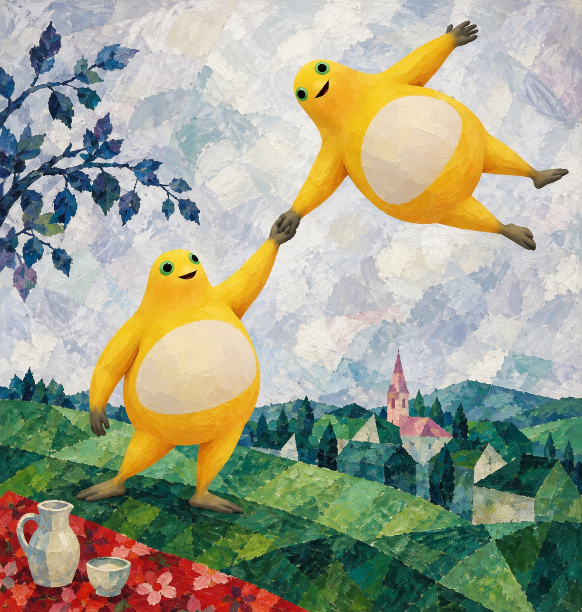
一只还站在地上 · V1 · 采用的定稿版本；具体来源与权利另列。这次的问题：用相接的手连接落地者与整身飘起者。
地面角色双足着地，空中角色四肢张开，手在两者之间相接。
单张建立轻重对照；厚笔触与圆腹体积仍是画面的一部分。
下一问题（尚未实施）：下一步可检验减少手的尺寸后，牵引关系是否仍清楚。
空盘先抬起来
右边的盘子载着一块红石，左边空着，却升得更高。奶蛙的手垂在旁边，没有碰秤。蓝色横梁的一点倾斜，让空和重有了可以看见的距离。
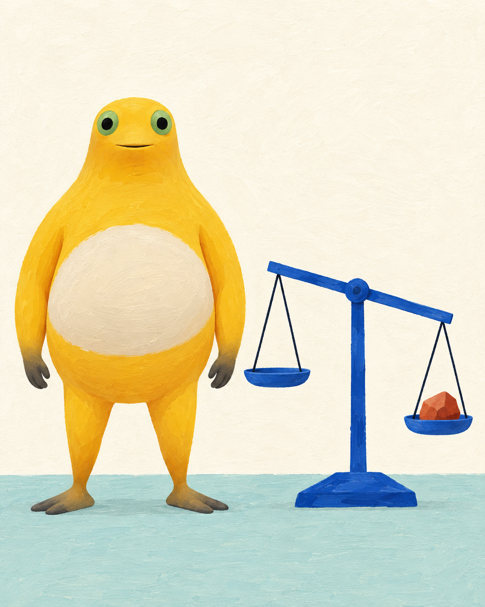
空盘先抬起来 · V1 · 采用的定稿版本；具体来源与权利另列。这次的问题：不用手扶，通过支点、横梁和悬线显示两盘高低。
右盘红石、左盘空置，倾斜横梁和悬线连续，手没有碰秤。
一张已回答静态高低关系；不据此宣称测得质量或发生运动。
下一问题（尚未实施）：下一步可改变两盘距离，检验重心关系是否仍一眼可读。
有一边不用描出来
右侧黄色身体融进同色的背景，轮廓不再把它完整圈住。左边的深蓝、乳白的腹部和落地的双脚，接着把这个身体留在画面里。有一边消失了，站立的感觉还在。
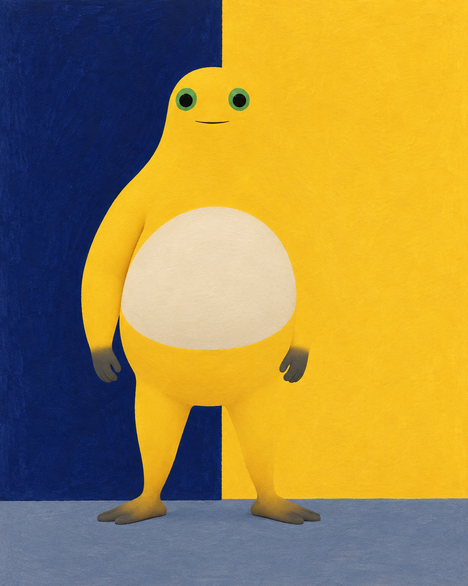
有一边不用描出来 · V1 · 采用的定稿版本；具体来源与权利另列。这次的问题：省去一侧外轮廓，仍让角色作为整体被看见。
右侧黄身体与背景相接，左轮廓、腹部与足部补足形体。
同色并置确实让边缘消失；右臂外缘因此无法独立量读。
下一问题（尚未实施）：下一步可少留一处内部线索，检验辨识会在哪一步变弱。
同一片红经过两种颜色
红色薄片经过黄色手臂时变成橙色，经过蓝椅时又转成紫色。颜色换了，方形的边仍接得上。伸出的手臂把两处重叠连起来，让一张薄片同时拥有几种颜色。
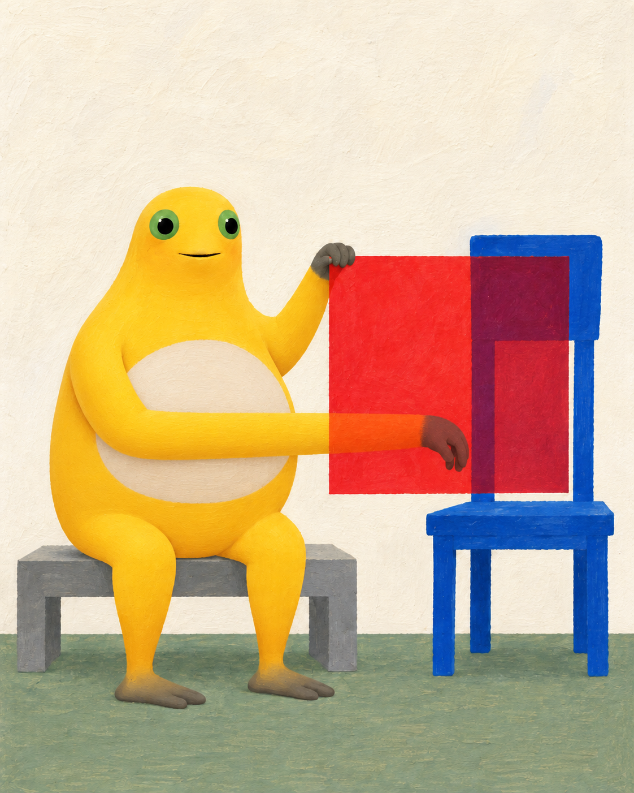
同一片红经过两种颜色 · V2 · 采用的定稿版本；具体来源与权利另列。这次的问题：一张红薄片跨过两种底色后，仍保持同一张的连续性。
黄色手臂处呈橙色，蓝椅处呈紫色，矩形边界连续。
V2修正手臂路由，保留两处叠色；这是绘画惯例，不是光谱测量。
下一问题（尚未实施）：下一步可减少外框提示，检验仅靠叠色能否接起薄片。
黑处也能抱住自己
身体里面和外面都是黑色，几条黄线仍围出抱膝的姿势。腹部的浅线到了手臂处就停下，膝盖又被灰手挡住。没有填满身体，拥抱也能有前后和重量。
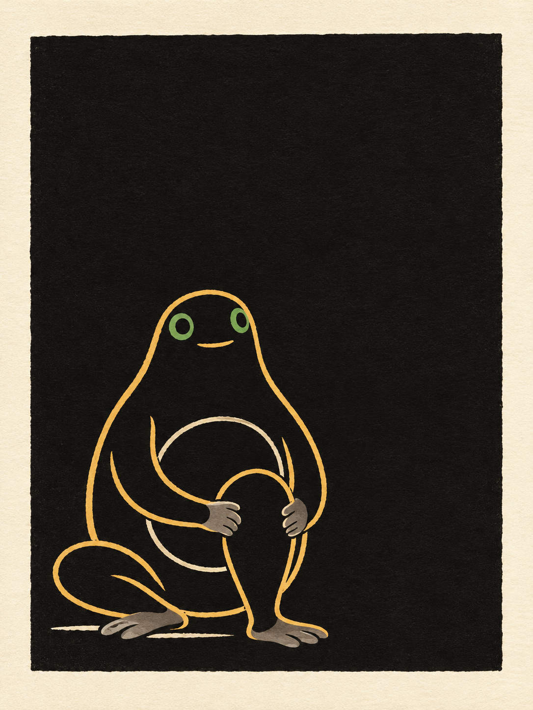
黑处也能抱住自己 · V1 · 采用的定稿版本；具体来源与权利另列。这次的问题：让轮廓的停顿交代抱膝遮挡，即使内外同黑。
腹部线在前景手臂处中断，膝线在灰手处中断。
V1已用少量线完成拥抱层次；V2虽暗化手足，未充分改善外轮廓，仍留作研究。
下一问题（尚未实施）：下一步可测试更少的线段是否仍能保留抱膝的重量。
右边窄了一点
一道折线从脸经过嘴和腹部，右边的眼睛和身体一起变窄。形状没有换一颗头，只像整张纸轻轻转了过去。小小的压缩，把正面变成了一个有方向的平面。
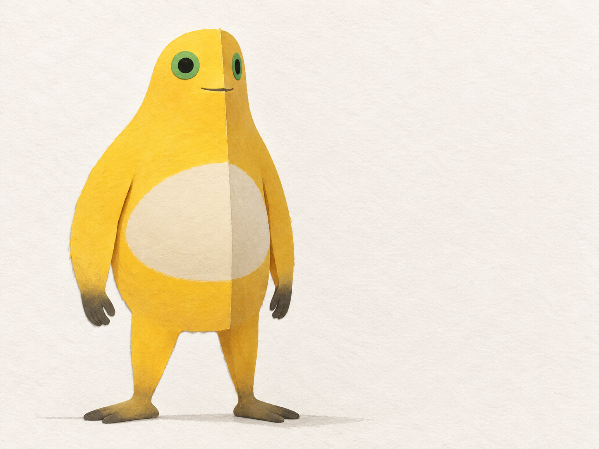
右边窄了一点 · V1 · 采用的定稿版本；具体来源与权利另列。这次的问题：用贯穿脸与腹部的整片折转表现朝向，避免额外颈部。
同一道折线穿过嘴与腹部，远侧眼睛和身体一同压窄。
单张建立整体平面朝向；保留静止姿势，只检验投影，不冒称动作。
下一问题（尚未实施）：下一步可检验更轻微的压缩是否仍能传达整片转向。
手先来到近处
伸向我们的灰手比另一只更大，却仍能沿着手腕、肘和肩接回身体。膝上的手留在远处，近处的手先跨出画面的距离。大块黄与赭色取代圆滑的明暗，伸手的意思仍然清楚。
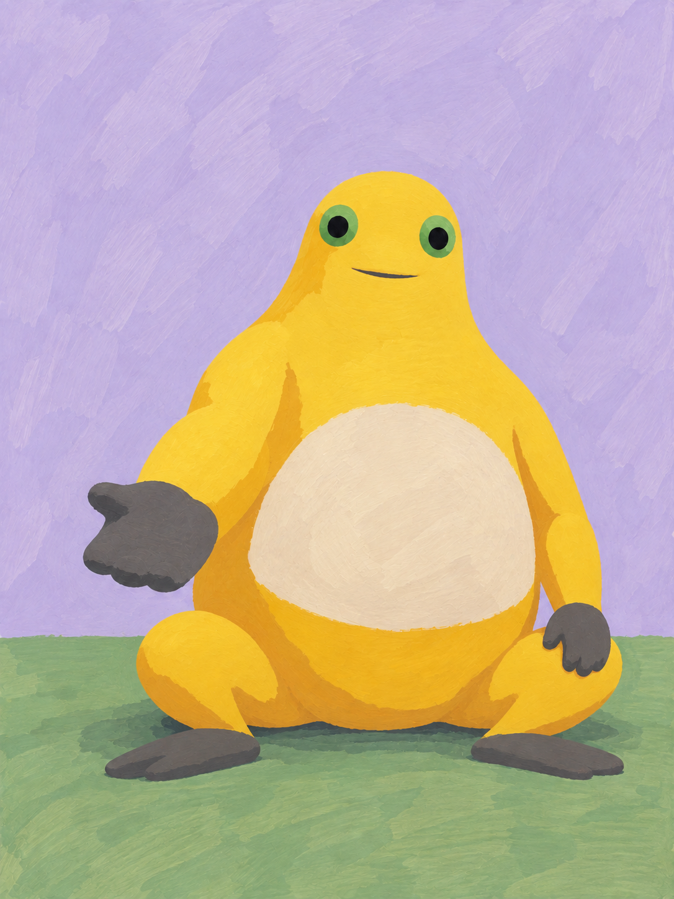
手先来到近处 · V2 · 采用的定稿版本；具体来源与权利另列。这次的问题：让前伸手的近大远小与肩肘腕连续性同时成立。
近手遮住手腕，手臂可追溯至肩；远手留在膝上。
V2把圆滑手臂与指节改成宽色面，伸手仍清楚；牺牲部分手指细节。
下一问题（尚未实施）：下一步可减小两手尺寸差，检验更克制的透视是否仍可读。
嘴张着，手垂着
两只手垂到膝间，嘴张成一小块深色。上眼睑遮住部分绿圈，身体仍端坐着；表情没有交代故事，低垂的手先让画面慢下来。
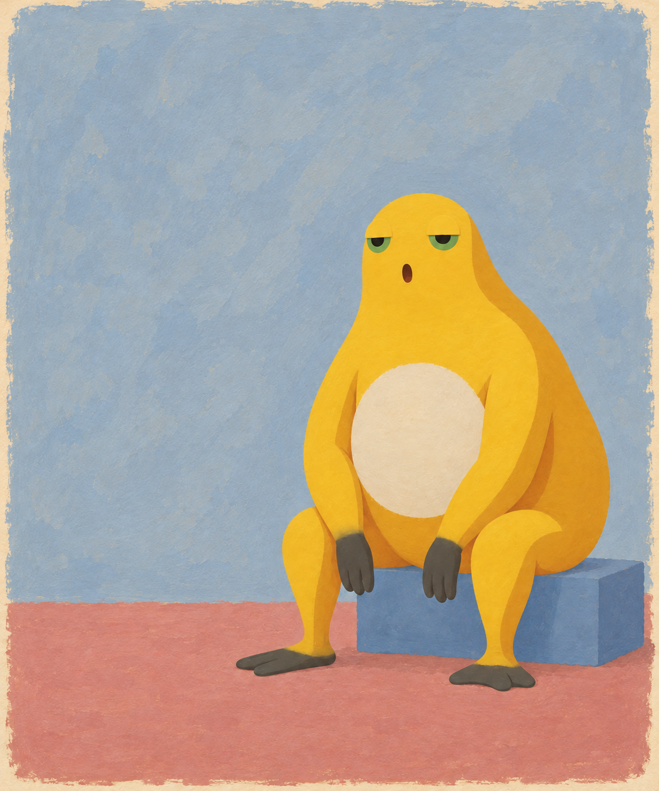
嘴张着，手垂着 · V2 · 采用的定稿版本；具体来源与权利另列。这次的问题：半闭的眼、小开口与放松的长臂能否共同改变表情，而不增加人的颈部和眉毛？
蓝色矮座承托宽腹，两足外撇着地，灰手分别悬在膝下。半闭眼、小开口与下垂双臂形成同一个向下的节奏。
采用V2，减弱眼睑的凸起和前臂圆滑明暗，保留黄与赭的平面分界。前倾仍弱，不以它解释承重变化，也不把单幅静态图当作打哈欠的证明。
下一问题（尚未实施）：同样的面部信号能否在更倾斜的连续梨形身体中保留？
灰色里的一道斜线
大片灰色里，绿楔从窗边斜着切下来。脸上的暗三角和琴上的节拍器接住这道方向；两只手停在谱架边，音乐没有响起来，画面先留下了一次停顿。
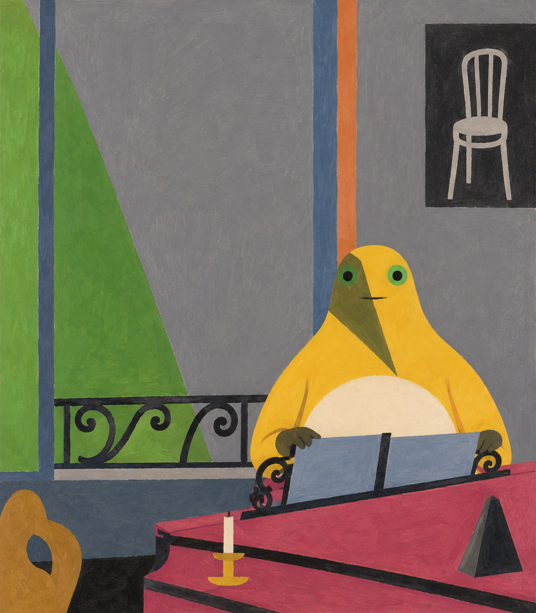
灰色里的一道斜线 · V1 · 采用的定稿版本；具体来源与权利另列。这次的问题：灰场、绿楔、脸部硬三角与节拍器能否组织平面节奏，同时保留遮挡下的角色身份？
角色的下半身被粉红钢琴遮住。上半身、乳白腹部和谱架两侧的灰手仍可读，深橄榄三角穿过左脸，与绿色窗楔构成斜线呼应。
采用V1。身体和房间都由平色造型，不用圆滑明暗模拟体积。角色比原作更大，减少了灰色空场；画中人物改为空椅，原作的人物与艺术品对照也随之改变。手扶谱架，不是正在弹奏琴键。
下一问题（尚未实施）：缩小角色面积能否增加静场而不失去身体组合？
来源与权利
本项目的AI辅助二维创作，不代表官方奶龙、参考艺术家或收藏机构。奶蛙为社区衍生形象；角色与参考作品权利归各自权利人。本馆不授予第三方内容开放许可，参考原图仅提供来源链接。